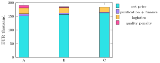

Definition
TCO compares suppliers including all costs associated with buying and using a good over its useful life (life-cycle analysis), not just the initial price: financial, logistic and disposal costs; discounting can be applied.
| Stage | Cost items |
|---|---|
| Pre-transaction | supplier analysis, qualification and evaluation |
| Transaction | purchase price, delivery (shipping, tariffs, taxes), |
| inspection and audit | |
| Post-transaction | returns, downtime from incomplete or defective |
| deliveries, warranty |
Everyday case: energy bills — the cheapest tariff per kWh is not always the cheapest contract once fixed fees and conditions are included.
Worked example
Aluminium oxide, 2,000 t from three suppliers (EUR):
| Item | A | B | C |
|---|---|---|---|
| Unit price (EUR/t) | 80.00 | 82.60 | 84.20 |
| Initial cost | 160,000 | 165,200 | 168,400 |
| Discount | (see *) | −5% | −4% |
| Net initial cost | 152,000 | 156,940 | 161,664 |
| Purification 50 EUR/t on | 6% → | 4% → | 3% → |
| impure share | 6,000 | 4,000 | 3,000 |
| Financial cost (pay 30 days | 1,520 | 1,569 | 0 |
| early at 12%/yr = 1%) | |||
| Transport | 17,817 | 15,493 | 16,526 |
| Insurance | 2,065 | 2,065 | 2,065 |
| Handling | 1,032 | 1,032 | 1,032 |
| Duties | 619 | 413 | 0 |
| Total logistics | 21,533 | 19,003 | 19,623 |
| Total costs | 181,053 | 181,512 | 184,287 |
| Impurity quality factor | 105% | 102% | 100% |
| TCO | 190,106 | 185,142 | 184,287 |
() A's quoted discount is 6%, but the net cost 152,000 corresponds to 5%; with 6% it would be 150,400 and TCO 188,409 — C still wins. Standard terms: 90 days from invoice; A and B require payment at 60 days, i.e. 30 days early: . *A is cheapest on price and on total costs, but C has the lowest TCO once the quality penalty for impurities is included.
Model
| Level | Aim | Uses |
|---|---|---|
| Strategic | improve the process | question core processes, BPR, |
| outsourcing, supply chain issues | ||
| Tactical | develop supplier improvement | find internal and external cost |
| drivers | ||
| Operational | manage and measure suppliers | feedback, performance, selection, |
| volume and cost allocation |
Pitfall
TCO is not the price plus freight: quality, downtime, payment terms and disposal are part of it. Factors like the 105% quality coefficient are estimates — state them.
Recall
List pre-, transaction and post-transaction costs; reproduce the aluminium oxide table and explain why C wins.
Picture

The cheapest price (A) carries the largest hidden costs.